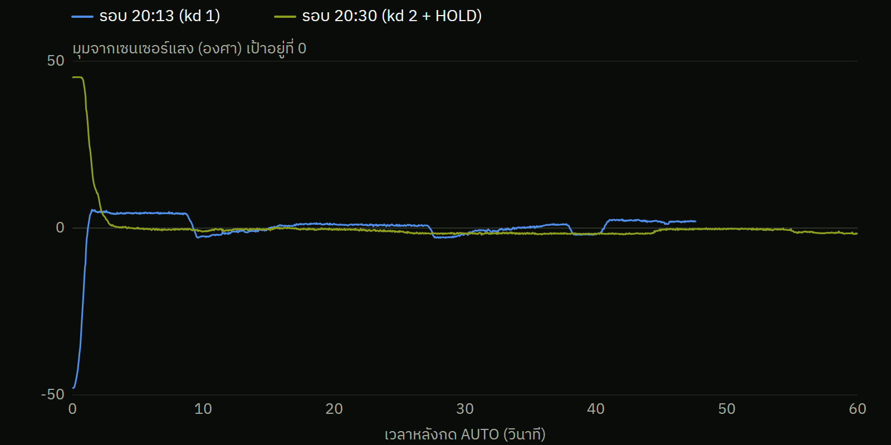

ผลบนแท่นจริง 6 ต.ค.
เพิ่ม kd และเปิด HOLD แล้ว ยานนิ่งอยู่ที่เป้า 57 วินาที

kd 1 → 2
เบรกแรงขึ้น เข้าเป้าใน 3.6 วิ ไม่เลยเป้า
HOLD
เมื่อใกล้เป้าไม่เกิน 1.5° เลิกเตะ ปล่อยล้อหมุนคงที่
57 วินาที อยู่ในช่วง −1.7° ถึง 0°
ปรับผ่านบลูทูธด้วยคำสั่ง TEAM_SET ไม่ต้องอัปโค้ดใหม่
ข้อมูลจากกล่องดำรอบ 20:13 และ 20:30
10